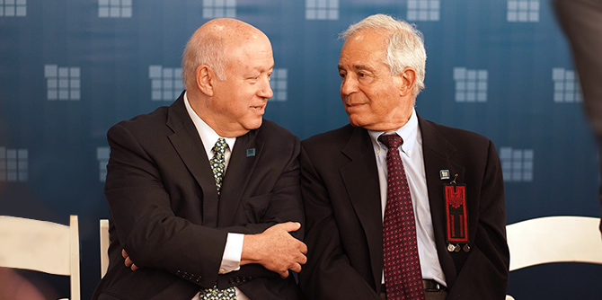

Stephen H. Hoffman (left) and Professor Jehuda Reinharz
The Board of the Jack, Joseph and Morton Mandel Foundation announced the appointment of new leadership at the Foundation given the recent passing of the last living founder, Morton L. Mandel on October 16, 2019. Mr. Mandel held the position of Chairman and CEO since the inception of the Foundation.
The Board unanimously elected Stephen H. Hoffman to Chairman of the Board. In addition, Foundation President Professor Jehuda Reinharz was unanimously given the additional title of Chief Executive Officer. Both appointments take effect immediately.
Mr. Hoffman is President Emeritus of the Jewish Federation of Cleveland, having led the organization from 1983 – 2018 although his career at the Federation began in 1974. He is a graduate of Dickenson College and received his Master’s of Social Work from the University of Maryland and a Master’s in Jewish Studies from the Baltimore Hebrew University. He had a long-standing friendship and partnership with Mort Mandel and his brothers spanning over 35 years. Mr. Hoffman has been a member of the Mandel Foundation Board for over 19 years, most recently serving in the capacity of Vice Chair.
“Mort Mandel has left an unprecedented legacy – he was a builder of leaders and institutions worldwide,” stated Mr. Hoffman. “The work of the Jack, Joseph and Morton Mandel Foundation will endure for many generations to come due to the vision and leadership of Mort Mandel.”
Professor Reinharz was the first individual to be named Foundation President in 2011 and has now also been named Chief Executive Officer, a title held by Mort Mandel prior to his passing. Professor Reinharz is President Emeritus of Brandeis University. He earned concurrent bachelor’s degrees from Columbia University and the Jewish Theological Seminary of America. He earned a Master’s degree from Harvard University and his doctorate from Brandeis University.
“Mort Mandel will be deeply missed not only by the Board and staff of the Mandel Foundation but by individuals worldwide. Mort planned everything including our mission statement, policies and procedures,” stated Professor Reinharz. “Even though the mission won’t change the Foundation is a living organism. The Board and I will insure that it continues to grow in a way that makes the world a better place.”
{kind=link}